牙齒矯正牙齒不整齊
，該怎麼矯正
矯正不只是把牙齒排整齊
Orthodontic Treatment矯正治療會一起處理牙齒排列、上下牙咬合與清潔困難等問題。有人是門牙擁擠、牙縫明顯，也有人在意暴牙、戽斗、深咬或咬不到；每一種情況需要處理的重點不同。
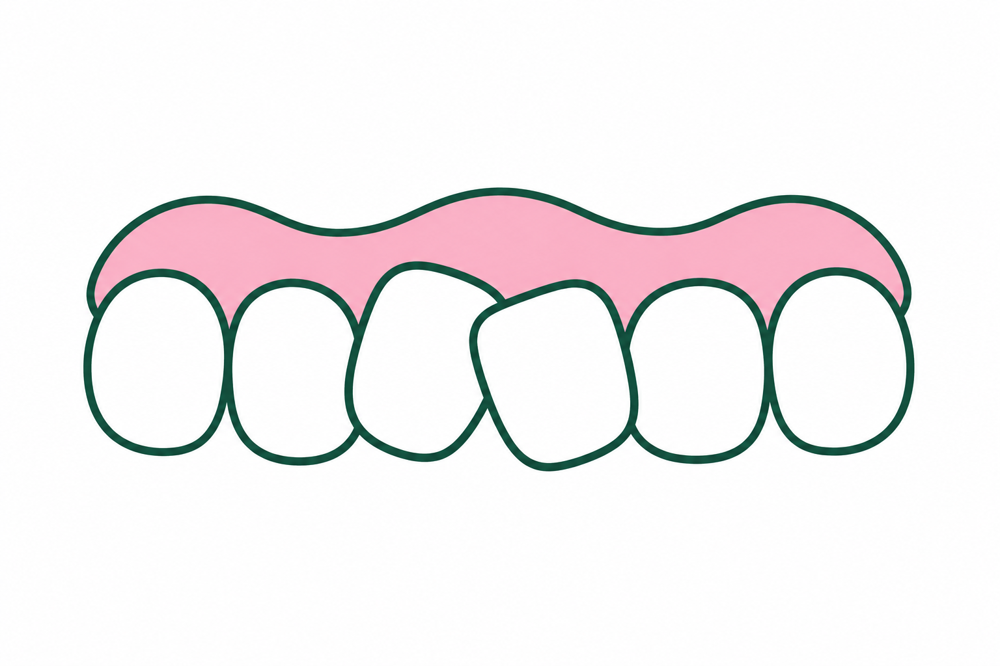
牙齒擁擠或有縫
牙齒重疊、旋轉或空隙明顯，可以檢查是否需要移動牙齒及如何安排空間。
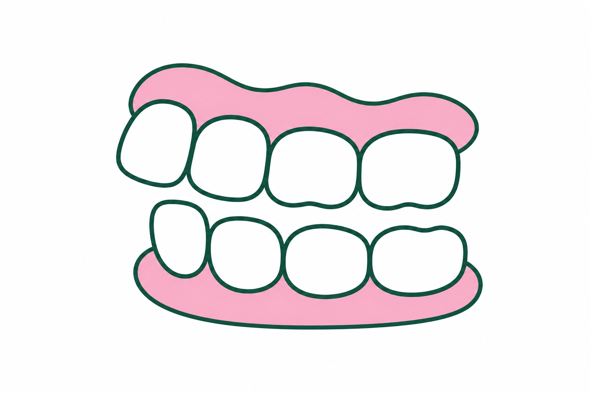
上下牙咬合不順
深咬、開咬、前後牙關係不協調等情況，需要一起看牙齒與顎骨關係。
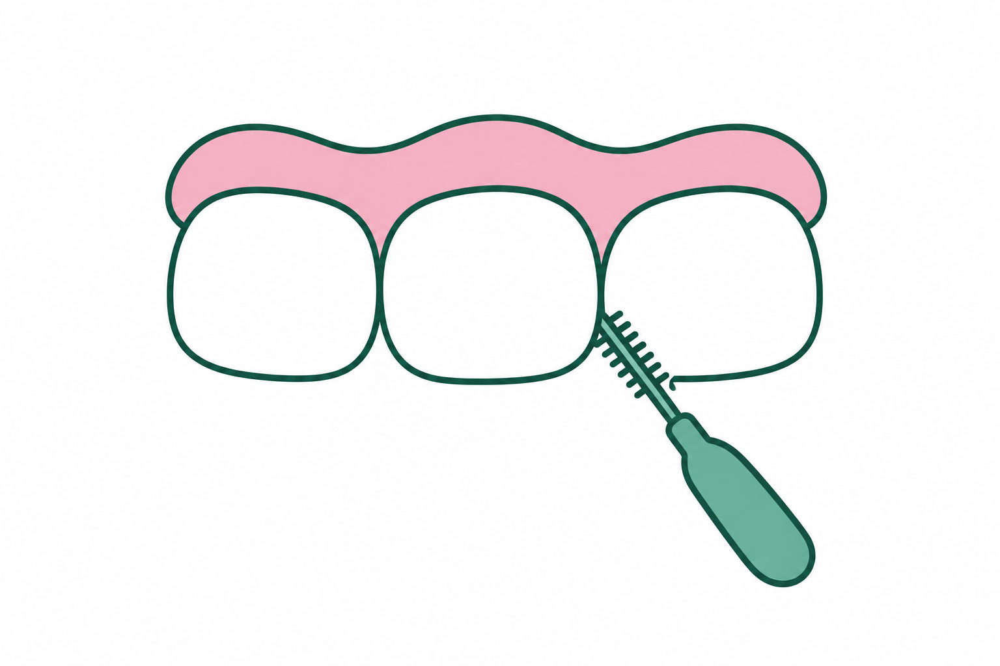
清潔總是卡住
排列不整可能增加清潔難度，但矯正期間本身也更需要認真刷牙與定期檢查。
固定式和隱形矯正，有什麼不同？
Braces or Aligners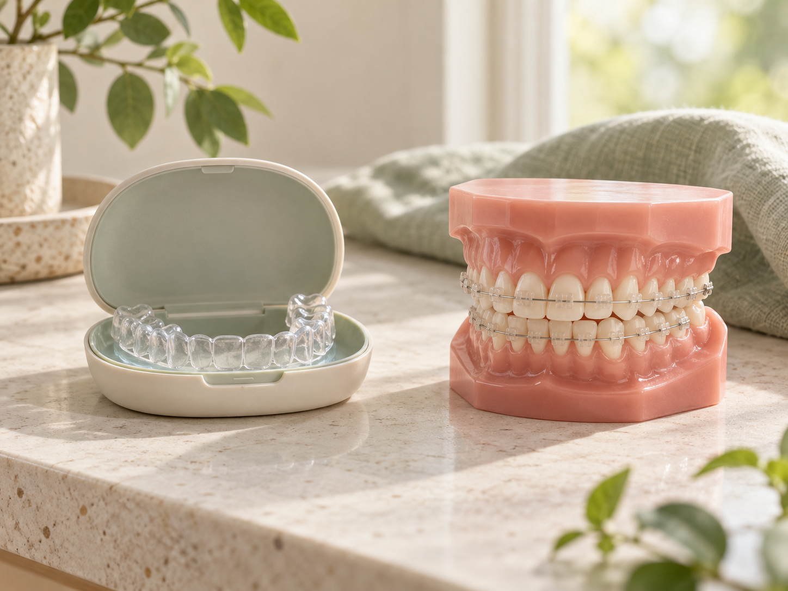
不是哪一種比較高級，而是哪一種更適合
固定式矯正器黏在牙齒上，由矯正線與裝置持續施力；透明牙套可以自行取下，但必須依指示配戴足夠時間。實際選擇仍要看牙齒移動難度、咬合問題、生活習慣與配合度。
- 固定式：不需記得戴回，但清潔與飲食要更留意。
- 透明牙套：外觀較不明顯，吃飯與刷牙可取下，但配戴時間會影響進度。
- 部分較複雜的移動可能需要附件、橡皮筋或其他輔助方式。
| 方式 | 平常怎麼使用 | 要注意什麼 |
|---|---|---|
| 固定式矯正 | 矯正器固定在牙面，由醫師定期調整。 | 矯正器周圍清潔、硬黏食物、裝置脫落或刮嘴。 |
| 透明牙套 | 依醫師指示每日配戴，吃飯與刷牙時取下。 | 配戴時間、自律度、牙套清潔與遺失。 |
隱適美 Invisalign
Clear Aligner System隱適美是透明牙套系統之一。醫師會取得口腔資料並規劃牙齒移動，再依治療階段安排一系列牙套。是否適合使用，仍要看牙齒移動難度、咬合與配戴配合度。
牙套只是生活的一部分
透明牙套可在吃飯與刷牙時取下，平常仍需依醫師指示配戴。規律配戴、清潔牙齒與妥善收納牙套，才比較不會讓日常活動打亂治療進度。
是否選擇隱適美，不只看外觀，也要考慮自己能不能長時間配戴、按時更換並配合回診。
外觀較不明顯
透明牙套戴在牙齒上，日常外觀相對不明顯；實際可見程度仍會受附件與牙齒狀況影響。
吃飯刷牙可取下
用餐與刷牙時可以取下牙套，但其餘時間要依醫師指示配戴，配戴時間不足可能影響進度。
仍需定期回診
醫師會檢查牙套密合、牙齒移動與咬合變化；回診間隔和是否需要追加牙套，依個人治療狀況安排。
開始矯正前，醫師會先檢查什麼？
Evaluation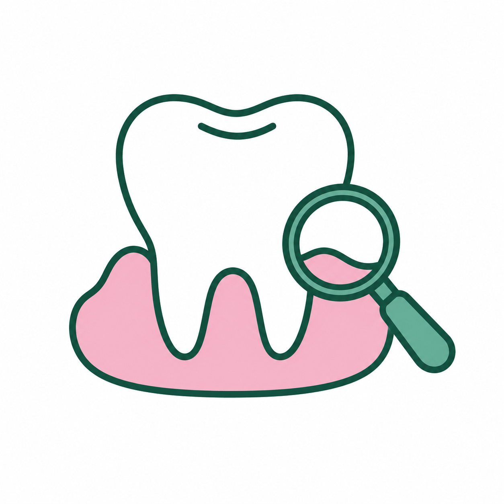
牙齒與牙周健康
蛀牙、牙齦發炎或牙周問題通常要先處理，矯正期間也要維持清潔與定期檢查。
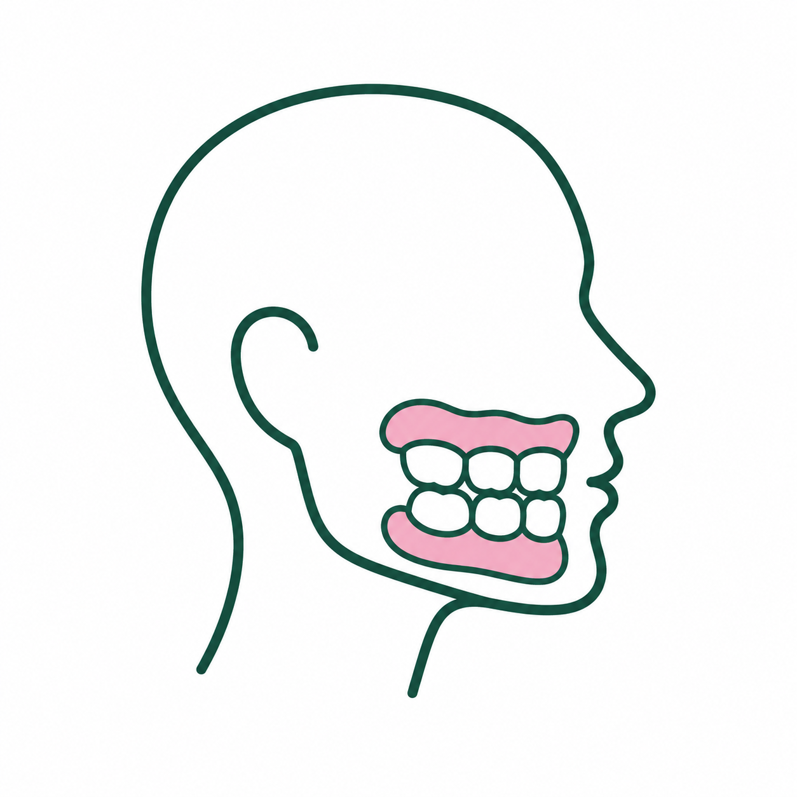
排列、咬合與臉型
透過口內檢查、照片、模型與影像，了解牙齒位置、上下顎關係及移動空間。
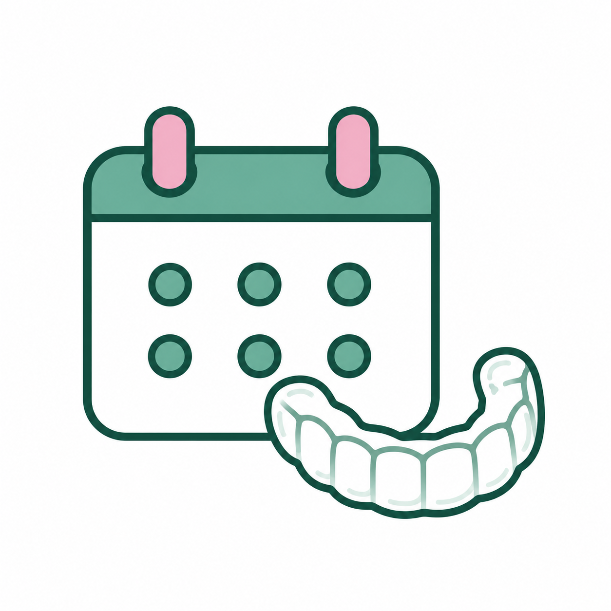
生活與配合方式
工作、飲食、清潔習慣與能否規律配戴牙套，都會影響治療方式的選擇。
先把現在的狀況看清楚，再一起討論
檢查資料不只是給醫師看，也會用來向你說明牙齒排列、咬合與可能的移動方式。了解自己的狀況後，再比較不同矯正選擇，會比只看牙套外觀更有方向。
要不要拔牙，不能只看牙齒亂不亂
是否需要拔牙，會考量擁擠程度、牙齒前突、臉型、牙周與骨骼條件，以及希望達到的咬合位置。有人不需要拔牙，也有人需要其他方式取得空間，必須檢查後才能回答。
矯正治療大致怎麼進行？
Treatment Process- 1.
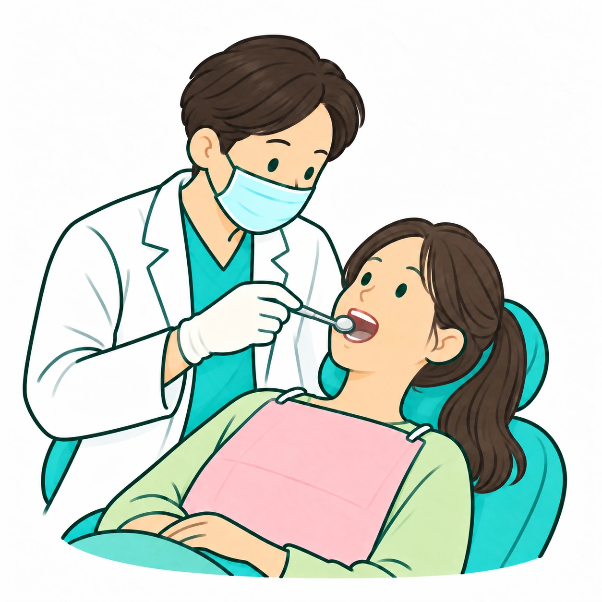
初步檢查
了解最在意的問題、牙齒健康與咬合狀況。
- 2.
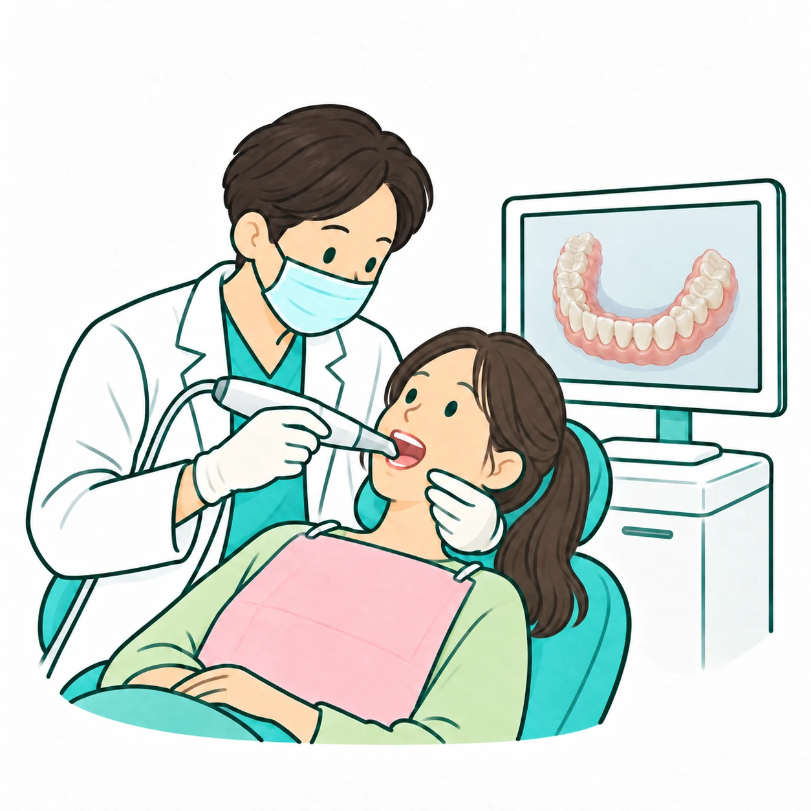
收集資料
依需要拍照、掃描或製作模型，搭配影像檢查。
- 3.
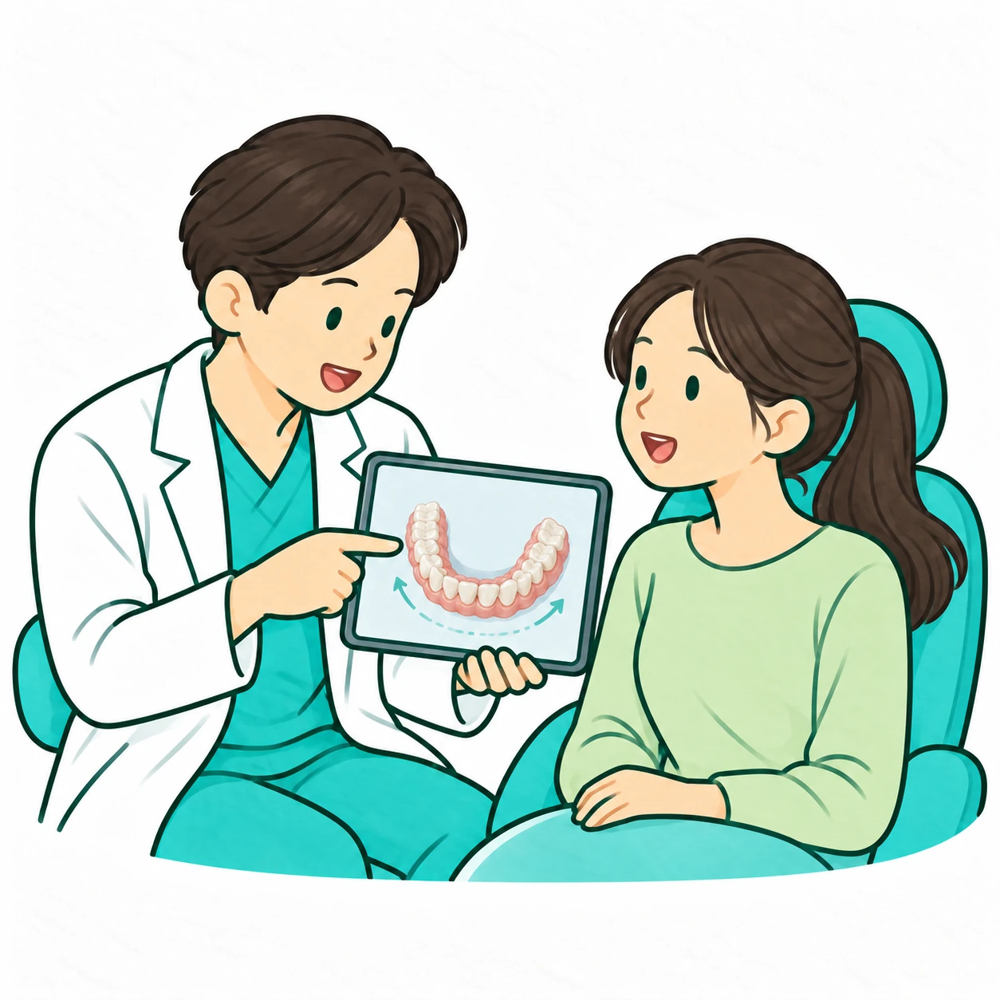
討論計畫
說明治療方式、是否拔牙、時間、風險與費用。
- 4.
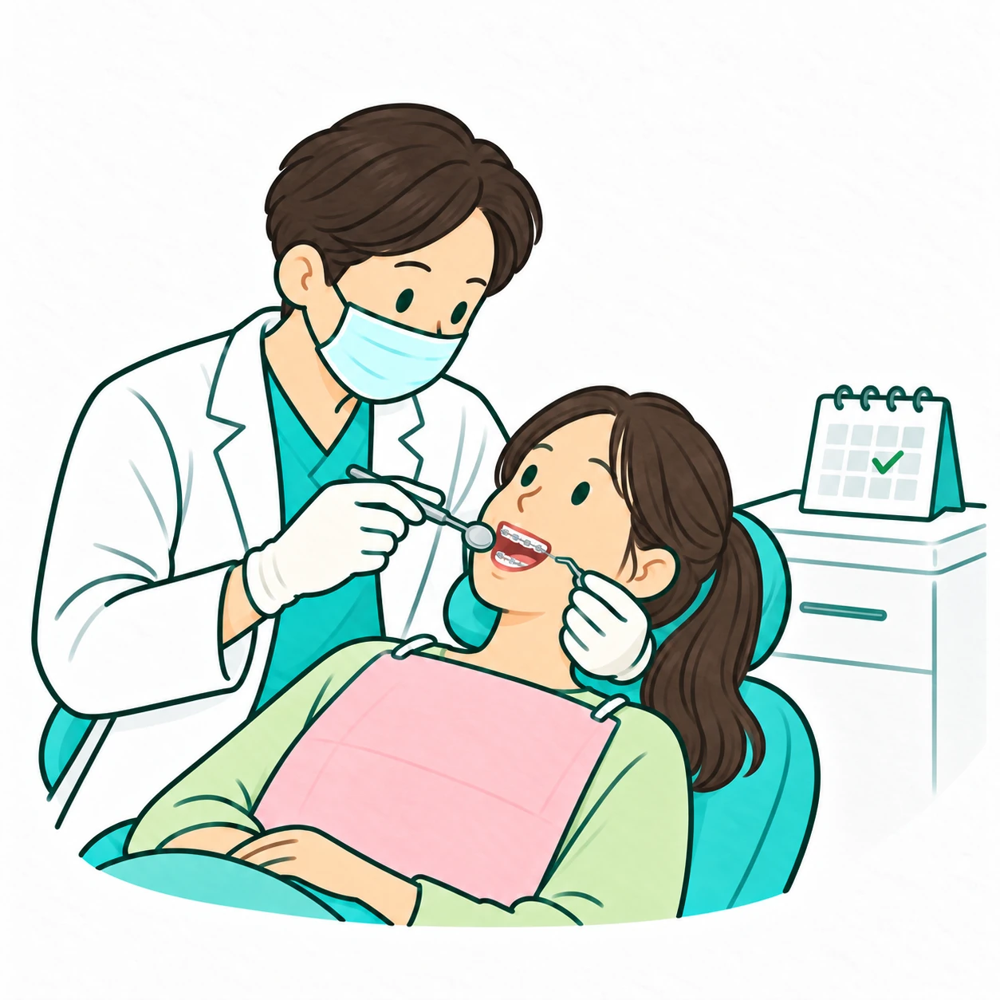
定期回診
調整裝置或更換牙套，檢查移動、咬合與清潔。
- 5.
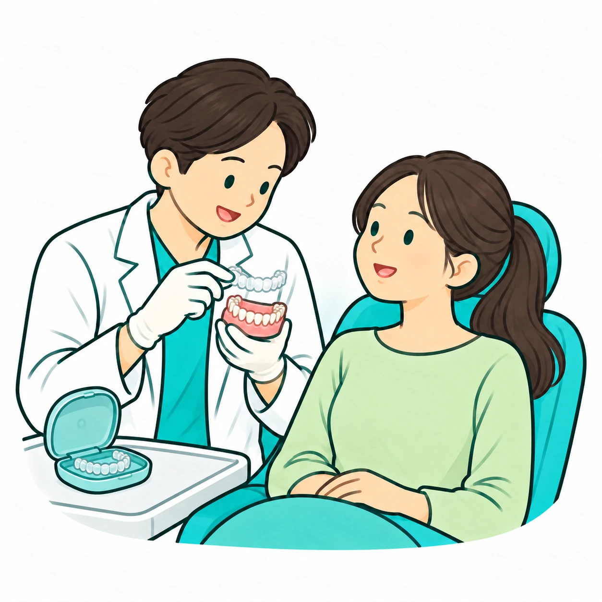
配戴維持器
主動治療結束後，依指示使用維持器，降低牙齒移位。
矯正期間，日常照顧很重要
Daily Care把清潔放進每天的生活裡
無論使用固定式矯正器或透明牙套，清潔都會直接影響牙齒與牙齦健康。建立固定習慣，比偶爾一次清得很仔細更重要。
固定式矯正
刷牙時要清潔矯正器上下與牙縫，並避免容易讓裝置脫落的硬、黏食物。
透明牙套
吃飯前取下，刷牙後再戴回；除白開水外，飲食時通常不戴著牙套。
兩種方式都一樣
若持續疼痛、牙齦明顯腫痛、裝置破損或牙套無法戴妥，應聯絡診所。
矯正結束，為什麼還要戴維持器？
Retainers牙齒排整齊後，仍可能慢慢移動
牙齒周圍的骨頭與牙齦需要時間適應新的位置，之後也可能受到咬合、年齡與生活習慣影響。維持器是治療的一部分，不是可有可無的附件。
- 配戴時間依個人狀況與醫師指示安排。
- 透明維持器避免用熱水清洗，以免變形。
- 若維持器破損、遺失或突然變緊，應儘早詢問診所。
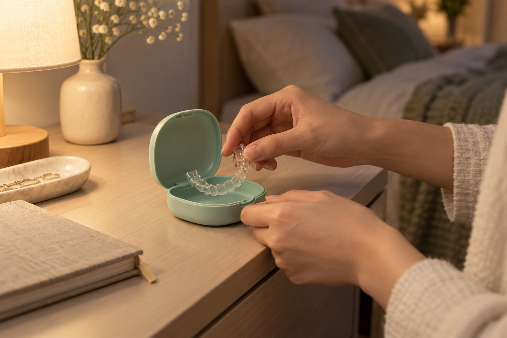
牙齒矯正常見問題
FAQ成年人也可以矯正嗎？
可以評估。年齡不是唯一限制，牙齒、牙周、骨骼與整體健康狀況更重要。
隱形矯正是不是每個人都適合？
不是。透明牙套能處理許多排列與咬合問題，但是否適合仍要看移動難度、配合度與治療設計。
矯正一定要拔牙嗎？
不一定。是否拔牙需依空間、牙齒前突、臉型、骨骼與牙周條件判斷。
矯正需要多久？
會依問題難度、移動範圍、治療方式與回診配合不同，無法只用固定月份回答。
戴牙套會痛嗎？
剛裝矯正器、調整或更換新牙套時，可能有幾天緊繃或痠軟；若疼痛持續或很明顯，應詢問診所。
矯正完可以不戴維持器嗎？
不建議自行停戴。牙齒有移動的可能，應依醫師指示長期配戴與回診檢查。
不知道該選哪一種牙套，可以先來檢查看看。
先了解牙齒排列、咬合與清潔狀況，再比較固定式和透明牙套的差別。
點我預約